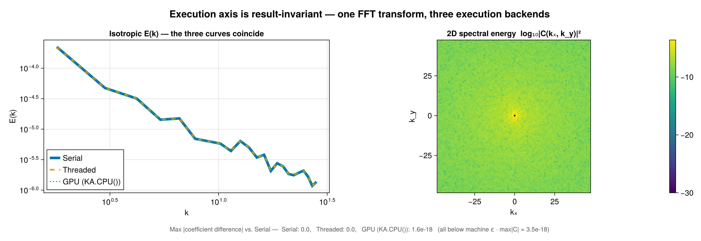

Backends and Extensions
FlowFieldSpectra.jl separates spectral algorithms from library dependencies using Julia 1.9+'s package extensions mechanism. By default, the core package is extremely lightweight and has no heavy external compiled dependencies (like FFTW or FINUFFT).
To activate optimized, high-performance backends, you simply import the corresponding package in your workspace.
Backends come in two orthogonal axes that compose freely — the public API takes one of each as the transform= and execution= keywords. The tag types live in two shared packages:
- Transform (
SpectralBackends.AbstractSpectralBackend) — which spectral math:DirectSumSpectralBackend,FFTSpectralBackend,NUFFTSpectralBackend,FSHTSpectralBackend,NUFSHTSpectralBackend(from SpectralBackends.jl). Covered by the matrix below. - Execution (
ComputationalBackends.AbstractExecutionBackend) — where/how it runs:SerialBackend,ThreadedBackend,GPUBackend,DistributedBackend,MPIBackend,AutoBackend(from ComputationalBackends.jl). Covered in Execution backends below.
using SpectralBackends: SpectralBackends as SB
using ComputationalBackends: ComputationalBackends as CB
# FFT transform, run threaded:
calculate_spectrum(grid, fields, ms; transform = SB.FFTSpectralBackend(), execution = CB.ThreadedBackend())
# Fast NUFFT on a CUDA GPU (cuFINUFFT):
calculate_spectrum(grid, fields, ms; transform = FFS.FINUFFTBackend(), execution = CB.GPUBackend(CUDABackend()))The default: AutoSpectralBackend
transform defaults to AutoSpectralBackend(), which picks the fastest transform the grid admits among the extensions you have loaded. It only ever selects a backend computing the same coefficients — an FFT is exact against the direct sum, and a NUFFT or NUFSHT matches it to its requested tolerance — and it checks each backend's precondition first, so the transform it names always applies:
| grid | Auto selects | precondition |
|---|---|---|
| uniform structured Cartesian | FFTSpectralBackend() | ms[d] == size(grid, d) on every axis; using FFTW |
| uniform in some directions, stretched in others | FFTSpectralBackend() (hybrid) | axis 1 uniform; using FFTW + a NUFFT provider |
| nonuniform structured / scattered / curvilinear Cartesian | a NUFFT provider | using NonuniformFFTs or using FINUFFT |
| FastTransforms' Clenshaw–Curtis sphere | FSHTSpectralBackend() | grid size matches ms and the nodes are that grid; using FastSphericalHarmonics |
| any other spherical grid | NUFSHTSpectralBackend() | using NUFSHT |
| nothing loaded for it | DirectSumSpectralBackend() | warns once, naming the package to load |
Two entry points differ. calculate_spectrum!(coeffs, grid, field, ms) is implemented for the direct sum, whose transform needs no plan, so Auto names it there; the library transforms execute in place through a plan. And plan_spectrum raises for DirectSumSpectralBackend(), which precomputes nothing a plan could hold.
Backend Selection Matrix (transform axis)
To choose explicitly, match the grid structure (structured vs. scattered/non-uniform) and coordinate system (Cartesian vs. Spherical):
| Coordinate System | Grid Structure | Baseline Backend | Fast Backend | Required Library |
|---|---|---|---|---|
| Cartesian | Uniform / Regular | DirectSumSpectralBackend() | FFTSpectralBackend() | using FFTW |
| Cartesian | Uniform in some directions, stretched in others | DirectSumSpectralBackend() | FFTSpectralBackend() (hybrid) | using FFTW + a NUFFT provider |
| Cartesian | Nonuniform tensor grid (all axes stretched) | DirectSumSpectralBackend() | NonuniformFFTsBackend() | using NonuniformFFTs |
| Cartesian | Scattered / Unstructured | DirectSumSpectralBackend() | FINUFFTBackend() | using FINUFFT |
| Cartesian | Curvilinear (CurvilinearGrid) | DirectSumSpectralBackend() | FINUFFTBackend() / NonuniformFFTsBackend() | using FINUFFT / using NonuniformFFTs |
| Spherical | Structured (Clenshaw-Curtis) | DirectSumSpectralBackend() | FSHTSpectralBackend() | using FastSphericalHarmonics |
| Spherical | Iso-latitude rings (HEALPix, reduced Gaussian) | DirectSumSpectralBackend() (ring-factorized) | — | none |
| Spherical | Scattered / Unstructured / panel pixelizations | DirectSumSpectralBackend() | NUFSHTSpectralBackend() | using NUFSHT |
| Spheroid | any surface (λ, φ) grid | DirectSumSpectralBackend() | NUFSHTSpectralBackend() | using NUFSHT |
Spheroid grids
A spherical harmonic is orthonormal over directions, and a SpheroidGeometry stores the geodetic latitude — which is not the colatitude of the direction its node lies in (the two differ by up to ~0.19° at mid-latitudes on Earth's ellipsoid). Each node is therefore embedded through the geometry's own geodetic_to_cartesian and its geocentric direction read back, and the grid's own area measure supplies the quadrature. What you get is the surface expansion of the field, as a geodetic field expansion uses. The spheroid's radius varies with latitude; that radial dependence belongs to the solid-harmonic expansion, which this package does not implement.
Because a spheroid is a surface of revolution, the direction does not depend on longitude, so a structured spheroid grid's latitude rows remain iso-latitude and it takes the ring-factorized path. A grid carrying height as a third direction is not the domain of a surface expansion and raises; build the surface grid and pass the levels as trailing batch dims.
Curvilinear grids
A CurvilinearGrid stores one coordinate array per direction holding a value per cell, so x = x(i,j) and y = y(i,j) each depend on both indices and the phase exp(-i(kₓx + k_y y)) admits no factorization into a product over axes. (A StructuredGrid stores one axis per direction, which is where its separable per-axis passes come from.) A curvilinear grid therefore transforms as a point cloud: every path a node cloud takes serves it — the direct sum on any execution backend, both NUFFT providers one-shot and through plan_spectrum, both inverses, and the Distributed/MPI point partition. A curvilinear grid over a spherical geometry takes the per-point spherical projection, since it declares no iso-latitude structure.
Spherical layout routing
The spherical transform picks its algorithm from the grid's sampling, whose traits (FlowGeometries.SphericalSampling.is_tensor_product, is_iso_latitude) state the structure it has — not from the grid's Julia type, which cannot distinguish the middle case:
| layout | grids | algorithm | cost |
|---|---|---|---|
| tensor product | StructuredGrid (Gauss–Legendre, Clenshaw–Curtis, Driscoll–Healy, lat–lon) | longitude DFT on the shared λ axis, then a θ-Legendre contraction | O(nlat·L²) |
| iso-latitude rings | HEALPixGrid, RingGrid (reduced/octahedral Gaussian) | longitude sum per ring (each ring has its own nlon and quadrature weight), then the same θ contraction over rings | O(N·L + nrings·L²) |
| point cloud | UnstructuredGrid, CubedSphereGrid, IcosahedralGrid, YinYangGrid, Fibonacci nodes | per-point projection | O(N·L²) |
Whether a grid's quadrature is exact at its stated band limit is also a declared trait, admits_exact_bandlimited_quadrature: true for Gauss–Legendre, Driscoll–Healy and the reduced Gaussians, false for Clenshaw–Curtis (whose weights support analysis only to lmax ≈ (nlat−1)/2) and for the equal-area pixelizations. Use a Gauss–Legendre grid when analysis must be exact at the band limit.
Measured single-harmonic round trips at each sampling's own band limit:
| sampling | nlat | bandlimit | exact by trait | round trip |
|---|---|---|---|---|
| Gauss–Legendre | 8 / 12 | 7 / 11 | yes | 2.0e-15 / 1.2e-15 |
| Driscoll–Healy | 12 | 5 | yes | 2.9e-16 |
| Clenshaw–Curtis | 8 | 7 | no | 1.2e-01 |
Degrees are checked against the sampling. ms[1] - 1 is the requested degree, and each sampling states what its latitude count supports through SphericalSampling.bandlimit. That relation varies by sampling: Driscoll–Healy's is nlat÷2 - 1 where Gauss–Legendre's and Clenshaw–Curtis's are nlat - 1. Asking for a higher degree emits one warning naming the limit and returns the coefficients, so a caller who wants them still gets them. McEwenWiauxSampling has no implemented latitude quadrature upstream and raises.
Detailed Backend Profiles
DirectSumSpectralBackend
- Use Case: Reference calculations, small grids, or zero-dependency runs.
- Mathematical Method: Direct Discrete Fourier Transform (DFT) summation or Spherical Harmonic Transform (SHT) direct integration via Legendre recurrence relations.
- Complexity: $O(N \cdot M)$, where $N$ is the number of grid nodes and $M$ is the number of spectral modes.
- Dependencies: None.
FFTSpectralBackend
- Use Case: Traditional uniform Cartesian grids (e.g. models on regular grids), and grids that are uniform in some directions and stretched in others (e.g. uniform in
x/y, stretched inz). - Mathematical Method: Fast Fourier Transform (FFT) via
FFTW.jl. Uniformity is read per axis (FlowGeometries.Grids.isuniform(grid, d), a type trait — the axis must be anAbstractRange). A grid uniform in every direction takes the pure FFT. A grid uniform in only some directions takes a hybrid transform: one FFT across all the uniform axes, then a 1-D type-1 NUFFT along each stretched axis, with every other spatial and batch dimension carried as that pass's batch. Axis 1 must be uniform; where it is stretched, use a NUFFT backend, whose separable path transforms every axis. - Complexity: $O(N \log N)$ uniform; hybrid pays the NUFFT only along the stretched axes.
- Dependencies: Requires
using FFTW. The hybrid also needs a NUFFT provider for its stretched axes (using NonuniformFFTsorusing FINUFFT); choose it withnufft = NonuniformFFTsBackend(), or leave the default and whichever provider is loaded is used.
# uniform in x, stretched in z: FFT along x, 1-D NUFFT along z
grid = FG.Grids.StructuredGrid(FG.Geometry.CartesianGeometry{Float64}(),
range(0, 2π; length = Nx + 1)[1:Nx], # an AbstractRange ⇒ uniform
stretched_z; # a Vector ⇒ stretched
periodic = (true, true), period = (2π, 2π))
coeffs, ks = FFS.calculate_spectrum(grid, f, (Nx, Nz); transform = SB.FFTSpectralBackend())NUFFT — FINUFFTBackend / NonuniformFFTsBackend
- Use Case: Scattered spatial points in Cartesian coordinates (e.g. ship tracks, sensor arrays, float data).
- Mathematical Method: Non-Uniform Fast Fourier Transform (Type-1).
SpectralBackends.NUFFTSpectralBackendis the abstract math; a provider is a library choice, so FlowFieldSpectra exposes two symmetric, concrete backends (neither is a default) — pass one astransform=:FINUFFTBackend()— viaFINUFFT.jl(using FINUFFT; GPU via cuFINUFFT on CUDA).NonuniformFFTsBackend()— viaNonuniformFFTs.jl(using NonuniformFFTs); a real-data fast path (real-to-complex FFT — ≈2× faster and half the memory when the field is real).
- Complexity: $O(N \log N + M \log(1/\epsilon))$.
- Dependencies:
using FINUFFTand/orusing NonuniformFFTs. Both may be loaded at once.
FSHTSpectralBackend
- Use Case: Regular spherical model grids (equiangular, Clenshaw-Curtis, etc.).
- Mathematical Method: Fast Spherical Harmonic Transform via
FastSphericalHarmonics.jl. - Complexity: $O(L^3)$ or $O(L^2 \log L)$, where $L$ is the maximum degree (
lmax). - Dependencies: Requires
using FastSphericalHarmonics.
NUFSHTSpectralBackend
- Use Case: Unstructured grids on the sphere (e.g., geodesic grids, scattered ocean stations, planetary orbit tracking).
- Mathematical Method: Non-Uniform Fast Spherical Harmonic Transform via
NUFSHT.jl. - Complexity: $O(M \log M + N \log(1/\epsilon))$ (where $M$ is number of modes, $N$ is number of points).
- Dependencies: Requires
using NUFSHT. - Note on Coefficient Recovery: Because scattered points are unstructured, the direct SHT projection (adjoint) is not the exact inverse. The backend supports an iterative Conjugate Gradient solver via
solve=trueto accurately reconstruct coefficients from scattered data. - NUFFT engine:
nufft=picks NUFSHT's internal non-uniform FFT (aNUFSHT/SpectralBackendsmarker; defaultAutoSpectralBackend()⇒ FINUFFT). Passnufft=NUFSHT.NonuniformFFTsBackend()for the real-data half-spectrum fast path on a real field. A reusable plan (plan_spectrum+calculate_spectrum!) presets the points / NUFSHT plan / CG workspace once for a fixed point set.
Execution backends
The execution axis chooses where and how the chosen transform runs; it is independent of the transform axis. Defaults to AutoBackend().
| Execution backend | Required library | Notes |
|---|---|---|
SerialBackend() | none | Single-threaded CPU (always available). |
ThreadedBackend() | using OhMyThreads | Multithreaded CPU: parallelises the direct-sum loop; sets the internal thread count of the FFTW (FFTSpectralBackend) and FINUFFT (FINUFFTBackend) plans (NonuniformFFTsBackend manages its own internal threading). FSHTSpectralBackend/NUFSHTSpectralBackend have no distinct threaded path (execution is a documented no-op there). |
GPUBackend(dev) | using KernelAbstractions (+ vendor pkg) | GPU execution on the KernelAbstractions device dev (see the GPU table below). |
DistributedBackend(inner) | using Distributed | Splits work across worker processes, each running inner locally. Parametric, e.g. DistributedBackend(ThreadedBackend()). Requires addprocs + @everywhere using FlowFieldSpectra. |
MPIBackend(inner) | using MPI | Splits work across MPI ranks, each running inner locally; partials combined with MPI.Allreduce!. MPIBackend(GPUBackend(dev)) targets a multi-GPU cluster. Launch under mpiexec. |
AutoBackend() | — | Picks ThreadedBackend when OhMyThreads is loaded and Threads.nthreads() > 1, else SerialBackend. Never auto-selects GPU/Distributed/MPI (those need explicit context). |
Point-partitionable transforms (DirectSumSpectralBackend, the NUFFT backends, and NUFSHTSpectralBackend in projection mode) distribute over the point/sample axis and sum the complex coefficients; FFTSpectralBackend/FSHTSpectralBackend (which need the full grid on one process) distribute over the batch/field axis instead.
The execution axis is result-invariant: it changes only where/how a transform runs, never the answer. One FFT transform under SerialBackend, ThreadedBackend, and GPUBackend(KA.CPU()) returns identical coefficients (to machine ε):

GPU transforms on any KernelAbstractions device
GPUBackend{B} is parametric on the KernelAbstractions device object B. Data is staged to that device (KA.allocate + copyto!), and the transform runs there:
FFTSpectralBackendis device-generic throughAbstractFFTs.plan_fft, which dispatches on the device array type: CUFFT on aCUDABackend(CuArray), rocFFT on aROCBackend(ROCArray), and FFTW onKA.CPU()(plainArray). Requiresusing KernelAbstractions+ the FFT provider for your device (FFTWfor CPU arrays,CUDAfor CUDA,AMDGPUfor ROCm). This is not CUDA-specific.DirectSumSpectralBackenduses the portable KernelAbstractions direct-sum kernels on any KA device.FINUFFTBackendon a GPU uses cuFINUFFT — CUDA-only (FINUFFT.jl provides no portable GPU NUFFT). On a non-CUDA device it raises.NonuniformFFTsBackendon a GPU is device-generic through KernelAbstractions: it threads the execution backend intoNonuniformFFTs.PlanNUFFT(…; backend=…)and reconstructs FFS's full centered spectrum with broadcasts / a KA kernel (real-input fast path included), so the same code runs on CUDA, ROCm, andKA.CPU(). This is the portable GPU scattered-Cartesian NUFFT;DirectSumSpectralBackendremains the $O(N M)$ portable fallback.- Spherical (
FSHTSpectralBackend/NUFSHTSpectralBackend/DirectSumSpectralBackend) always uses the KA spherical direct-sum kernel — FastSphericalHarmonics and NUFSHT are CPU-only, so there is no fast GPU spherical-harmonic transform.
| Transform | Grid | GPUBackend(CUDABackend()) | GPUBackend(KA.CPU()) / other KA device |
|---|---|---|---|
FFTSpectralBackend | uniform Cartesian | CUFFT (via AbstractFFTs) | FFTW on KA.CPU(), rocFFT on ROCm, … (via AbstractFFTs) |
FINUFFTBackend | scattered Cartesian | cuFINUFFT — using CUDA, FINUFFT | errors (cuFINUFFT is CUDA-only) |
NonuniformFFTsBackend | scattered Cartesian | NonuniformFFTs (device-generic, via CUDA) | NonuniformFFTs on any KA device (KA.CPU(), ROCm, …) |
DirectSumSpectralBackend | any Cartesian | KA direct-sum kernel | KA direct-sum kernel |
DirectSumSpectralBackend/FSHTSpectralBackend/NUFSHTSpectralBackend | any spherical | KA spherical direct-sum kernel | KA spherical direct-sum kernel |
The device-generic FFT, direct-sum, and NonuniformFFTs NUFFT paths are exercised on CI via GPUBackend(KA.CPU()). The CUDA-specific paths (CUFFT on CuArray, cuFINUFFT) are validated on real CUDA hardware via the package's gpu/ project — CI has no GPU.